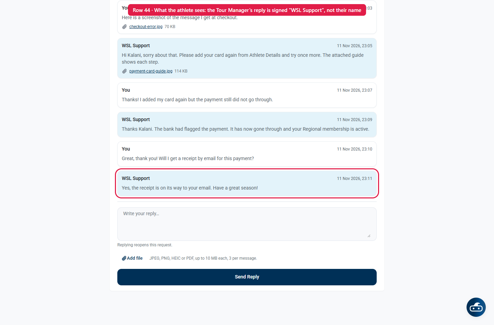
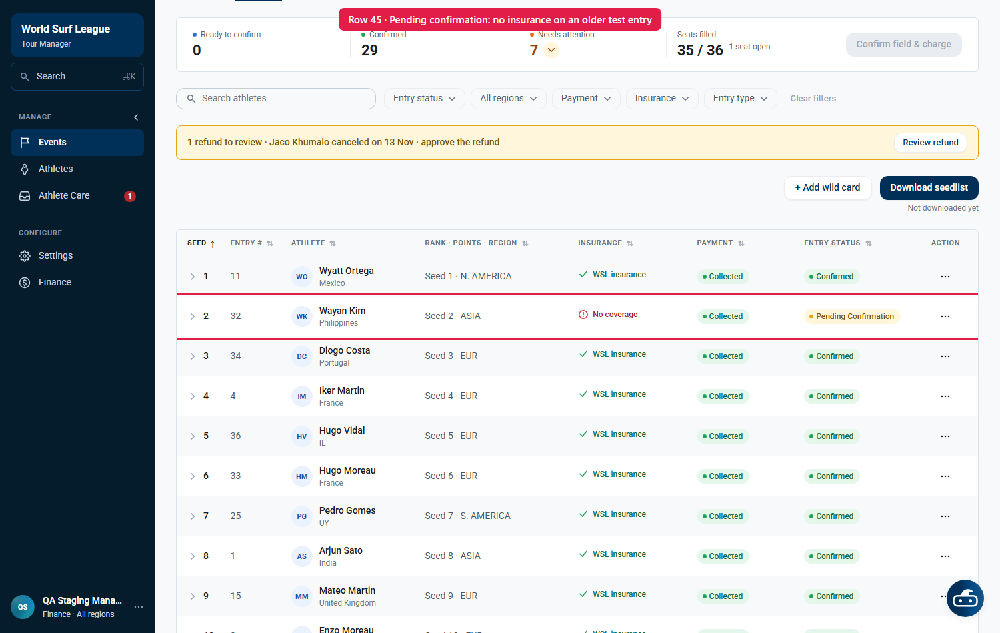
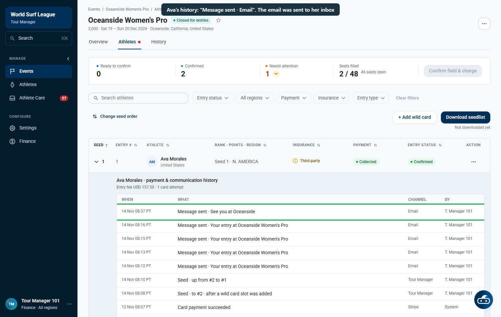
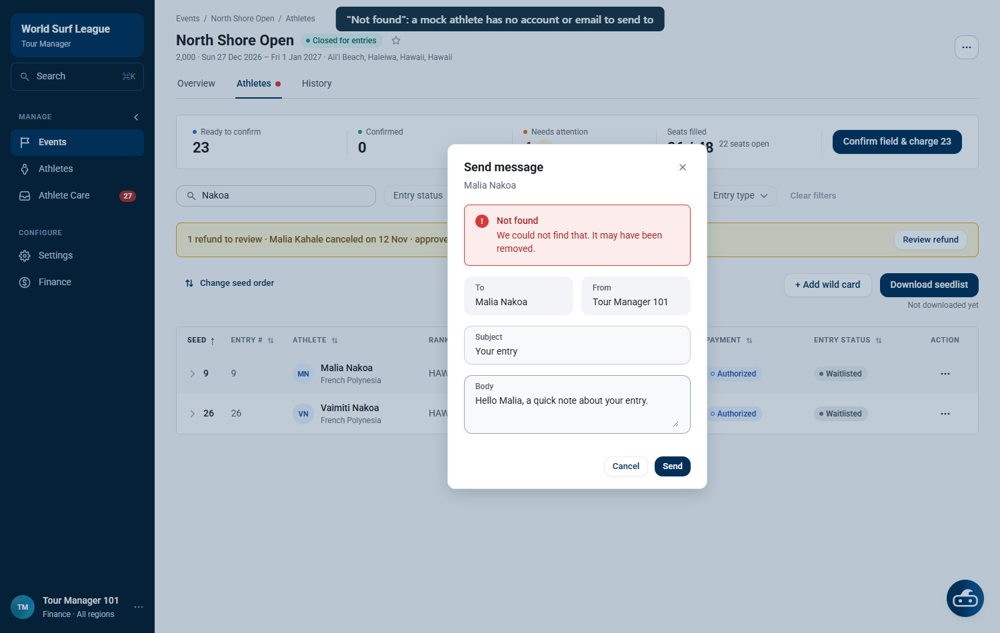
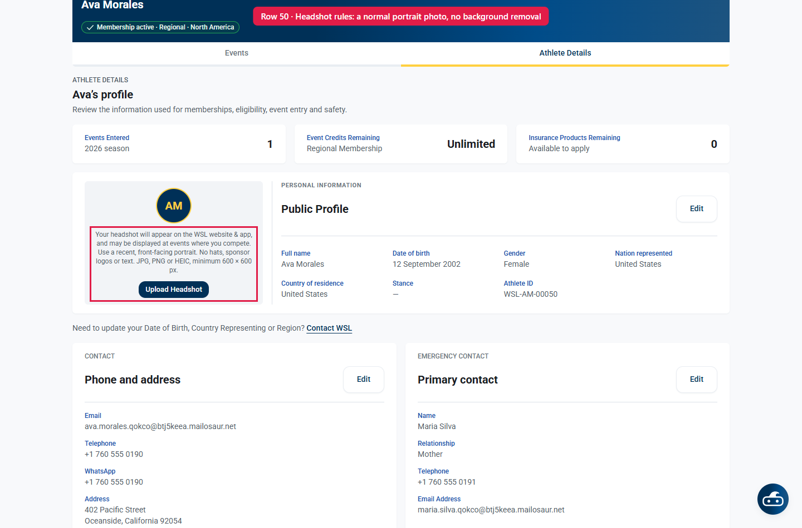
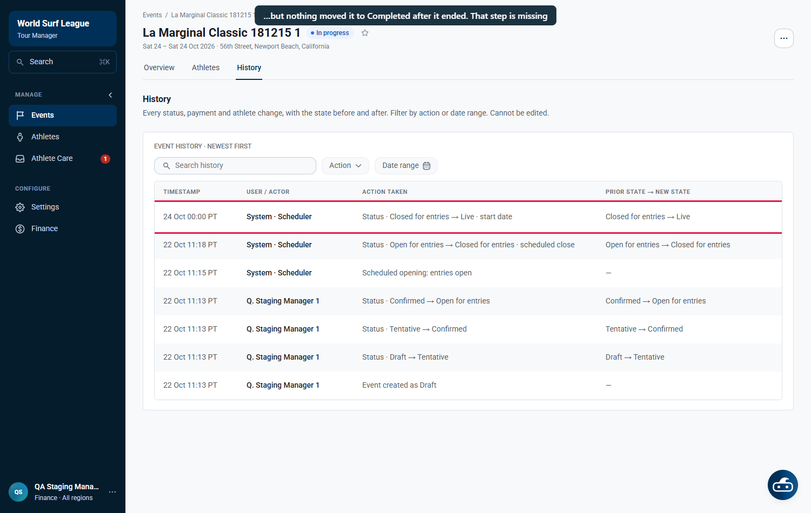
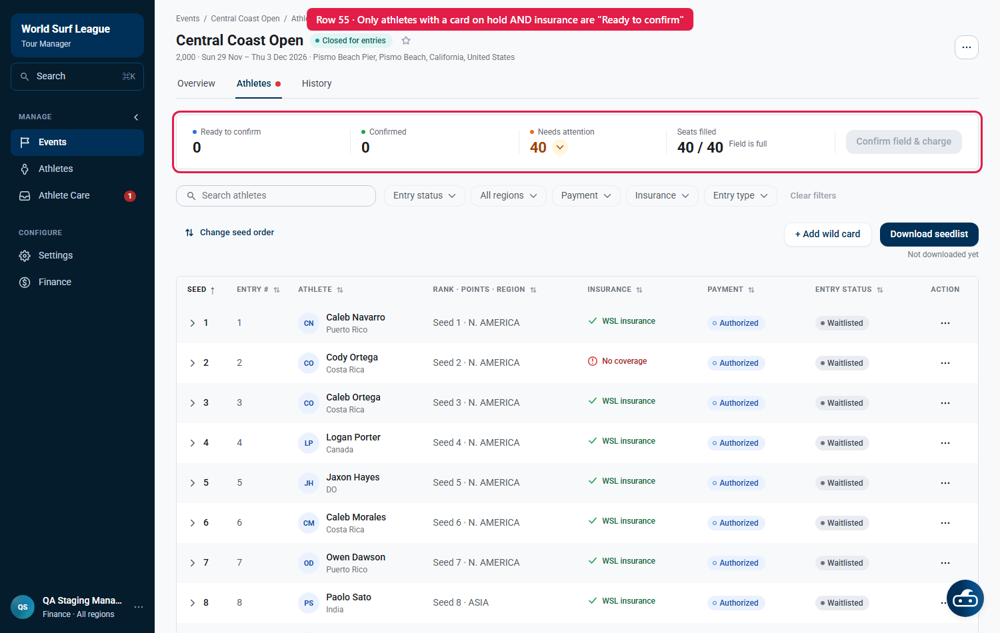
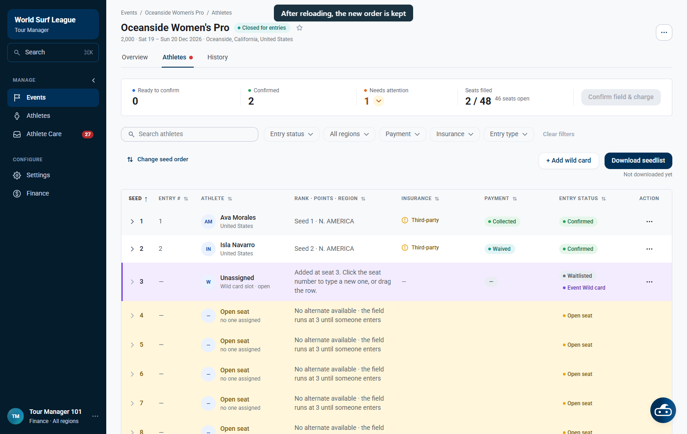
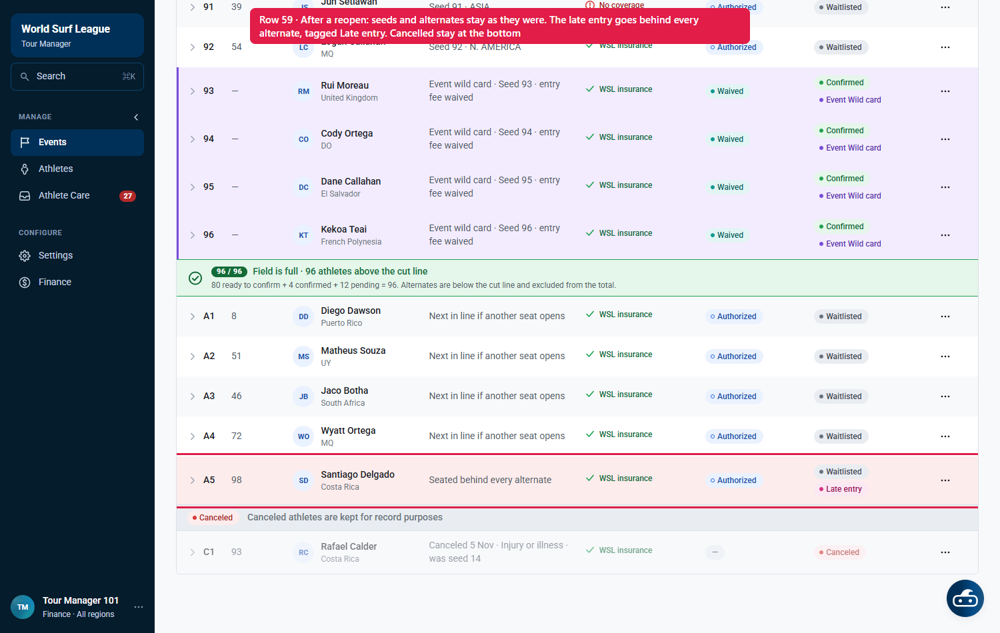

Do Athlete Care messages have to be assigned? Does our name show?
"Do messages have to be 'assigned'? Does our name show on the responses?"
- Yes. Click Assign to me before you can reply. If another Tour Manager has it, use Take over.
- Inquiries you start yourself (New inquiry) are assigned to you automatically.
- Athletes see every reply as "WSL Support", never your name.

Will "Pending confirmation" because of insurance still happen?
"When insurance is just buy policy or waiver, this pending confirmation because of insurance won't really exist, or only for wildcard?"
- Correct. Athletes choose cover when they enter (WSL insurance, their own policy, or the waiver), so a normal entry never waits on insurance.
- "Pending confirmation" is only for wild cards (they still add their own insurance and card) and for declined cards.
- Rows like the one below, with "No coverage", are older test entries made before this rule.

"Unable to send message"
"TM events / athlete – Unable to send message"
- The athletes in these test events are mock (seeded) athletes, with no real account or email, so there is nobody to send to and the message shows "Not found".
- With a real athlete who registered with an email, Send message works and the athlete receives the email. The entry history records "Message sent · Email".
Real athlete: the message is sent, and her history shows "Message sent · Email".

Mock test athlete (no account or email): "Not found".

Headshots: does WSL Pro remove the background?
"Will WSL Pro automatically make a PNG with no background, or does the surfer need to edit it first?"
- No automatic background removal, and no special editing is needed.
- The athlete uploads a normal recent, front-facing portrait: JPG, PNG or HEIC, at least 600 × 600 px, up to 10 MB, no hats, sponsor logos or text.
- They crop it in the app, and a Tour Manager reviews it before it shows.

"Status says In progress for all events"
- It is not caused by the test data. Events created in the app show the same thing.
- As defined in P1 (P1 Events Hub PRD), an event moves to "In progress" on its start date, and "Completed" is set by the live-scoring system (BDL/CMS) after the final heat. That P1 connection isn't in place yet, so events that already ended stay "In progress".
- The recording shows a real event created in the app (La Marginal Classic, 24 Oct): its history shows it went Live on 24 Oct, and nothing moved it to Completed afterwards.

Reopening Taiwan Open for late entries
"When trying to reopen Taiwan Open for late entries it does not let me select a new closing date."
- Late entries can only be reopened before the event starts, and the new closing date must be before the start date.
- Taiwan Open starts on 14 Nov in Taiwan, 16 hours ahead of PT. From 8 am PT on 13 Nov it was already 14 Nov there, the day the event starts, so no closing date was left to choose. It is now "In progress", and "Open for entries" is no longer available.
Why is only one person "ready to confirm" at Central Coast?
- An athlete is Ready to confirm only when they have a card on hold, insurance, and a membership that covers this event.
- In the Central Coast test data, most athletes' memberships don't cover the event and a few have no insurance, so they show under "Needs attention" instead.

Moving a wild card spot (drag and drop)
"I could not drag and drop the wild card spot."
- 1. Click Change seed order above the list. Rows can't be dragged until you do.
- 2. Drag the row by its handle on the left, or click the seat number and type a new one.
- 3. Click Done. The new order is kept.

The seed list after reopening for late entries
"When you close an event and seed it, then reopen for late entries – how does that seedlist look different?"
- The seeds and alternates you already set stay as they were.
- Each late entry is added behind every alternate ("Seated behind every alternate"), with a "Late entry" tag that stays even after confirmation. You can drag it up if needed.
- Cancelled athletes stay at the very bottom.
